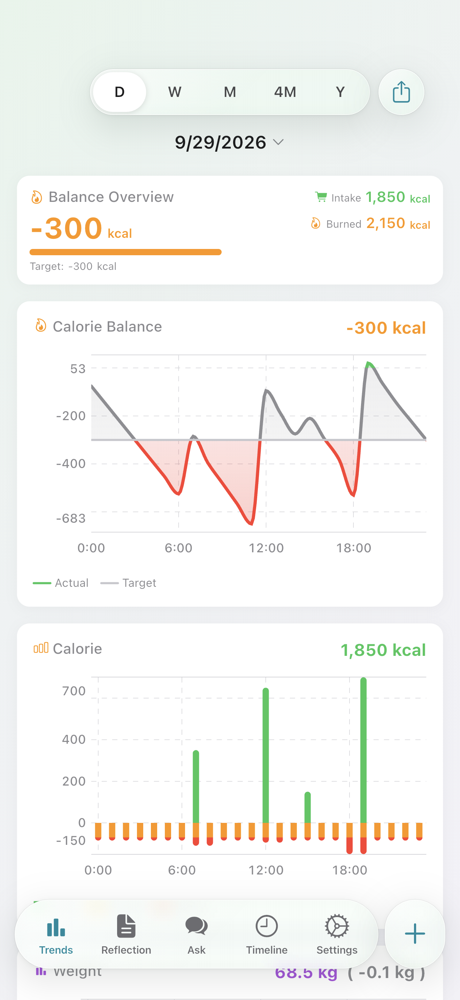
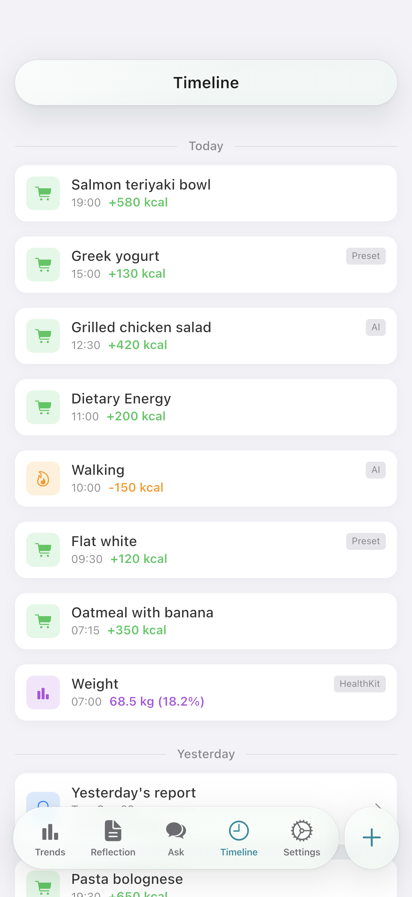
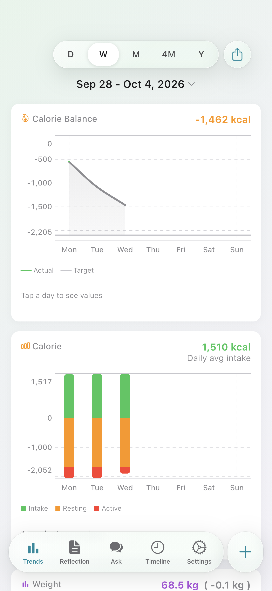
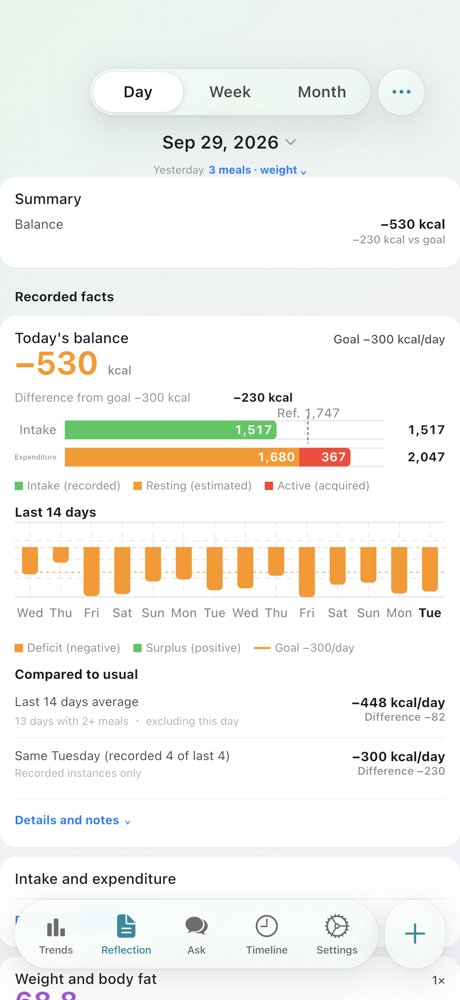
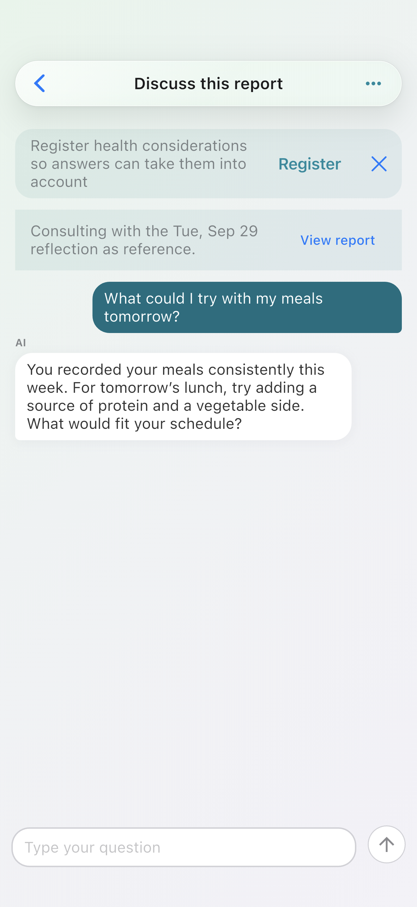
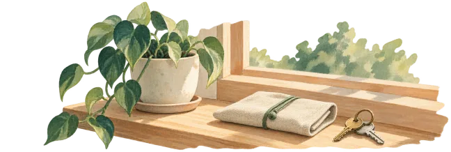

A line to compare against.
Overlay a selected reference line on your chart and compare it with your records.
See what you eat alongside what you burn — and the difference between them. Sync your burn data from Health, and use AI to help log meals.
Manual / preset / AI
From Health
Burn exceeds intake by 300 kcal
Health data stays primarily on your device. See the FAQ below for what is sent when using AI.

Meals, activity, and weight share a single chronological feed. The source of every entry (manual / AI / HealthKit) is clearly labelled.
Record what you eat with manual entry, favorites, or AI estimates.
Auto-imports burn and weight from Apple Health / Health Connect.
Today's balance, in one view.
Calorie balance, logging, presets, Health sync, and daily, weekly, and monthly reviews are available for free.

This example is not connected to AI. It is a step-by-step demo with fixed placeholder values, not actual food calories.
Log meals manually, from favorites, or with AI estimates. Try part of the input sheet with a fixed sample.
Use the fixed sample to try displaying, selecting, and adding a value.
This Web example reproduces part of the current app input sheet. Food names and card values are placeholders. Camera, history, and the nutrition and date fields below are not available here. Done only shows a Web example message; nothing is saved or sent. × resets the example.
Energy you type in or estimate with AI is saved together with the selected cards.
Shown as the name in your timeline. It doesn't change calories and doesn't run an AI estimate.
Describe the food and portion to get a calorie estimate.
Adjust the value before saving — the final say is yours.
Estimates work for activity entries (e.g. “30 min walk”).
Ask about a daily, weekly, or monthly review with a summary of the relevant records. Consent to the provider and shared data is required.
Review balance and weight trends side-by-side. Look beyond a single day’s change to the records you’ve built over time.

Review meals, activity, and weight by day, week, or month without AI. Bring a summary of the report into an AI conversation when you want to ask about it.

Ask questions about meals and your records in chat. A conversation started from a review can continue with a summary of those records. AI answers are inferred information, not medical advice or individualized nutritional guidance.

Free with ads. No account needed to get started.
Calorithm Plus is an optional plan for iOS in Japan. Keep the free features, with extra ways to compare and understand your records.
Overlay a selected reference line on your chart and compare it with your records.
Compare your PFC balance and salt intake with public reference values.
Add analysis cards to weekly and monthly reviews. Explore balance alongside weight and changes across periods.
| Feature | Free | Plus |
|---|---|---|
| Intake, burn, and calorie balance | ||
| Meal logging | ||
| Activity logging | ||
| Weight logging and charts | ||
| Automatic Health sync | ||
| Saved meal presets | ||
| Meal, activity, and weight timeline | ||
| Home-screen widget | ||
| Daily, weekly, monthly reviews | ||
| Reference lines on charts | — | |
| Additional review analysis | — | |
| AI estimation and chat | More access | |
| AI web search | — | |
| Previous conversations | Latest 3 | Latest 30 |
| Ads | Shown | Hidden |
Plus is for iOS in Japan. Android remains Free-only.
Reviews themselves are free. Plus adds further comparisons and analysis.
AI usage limits apply in the app.
Meal estimates and chats can check product nutrition and other public information when needed. Requests that actually use search consume more points than requests without it. Search depends on your settings and available usage allowance; it does not run for every request.
Don't see your question? Reach out from Support.

Free with ads. No account needed to get started.